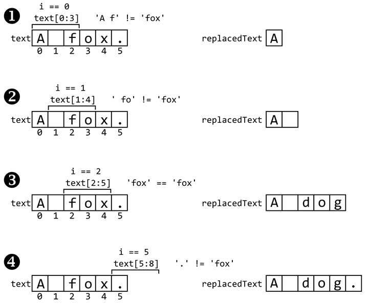

Prev - #9 Chess Square Color | Table of Contents | Next - #11 Hours, Minutes, Seconds
findAndReplace('The fox', 'fox', 'dog') → 'The dog'
Find-and-replace is a standard feature in text editors, IDEs, and word processor software. Even the Python language comes with a replace() string method since programs often use it. In this exercise, you’ll reimplement this common string operation.
Exercise Description
Write a findAndReplace() function that
has three parameters: text is the string with text
to be replaced, oldText is the text to be replaced,
and newText is the replacement text. Keep in mind
that this function must be case-sensitive: if you are replacing 'dog' with 'fox', then the 'DOG' in 'MY DOG JONESY' won’t
be replaced.
These Python assert statements stop
the program if their condition is False. Copy them
to the bottom of your solution program. Your solution is correct if the following
assert statements’ conditions are all True:
assert findAndReplace('The fox', 'fox', 'dog') == 'The dog'
assert findAndReplace('fox', 'fox', 'dog') == 'dog'
assert findAndReplace('Firefox', 'fox', 'dog') == 'Firedog'
assert findAndReplace('foxfox', 'fox', 'dog') == 'dogdog'
assert findAndReplace('The Fox and fox.', 'fox', 'dog') == 'The Fox and dog.'
Try to write a solution based on the information in this description. If you still have trouble solving this exercise, read the Solution Design and Special Cases and Gotchas sections for additional hints.
Prerequisite concepts: slices, indexes, len(),
augmented assignment operator
Solution Design
While Python comes with several string methods, such as replace(), find(), and index(), that could do this exercise for us, we’ll do the
finding and replacing on our own.
At the beginning of the function, create a replacedText
variable to hold the text with replacements. It starts as a blank string. We’ll
write code that copies the text in the text
parameter to replacedText, except for where it finds
instances of oldText, in which case newText is copied to replacedText.
Create a while loop starts a variable
named i at 0 and then keeps
looping until i reaches the length of the text string argument. This i
variable points to an index in the text string. The
code inside the loop increases i by the length of oldText if it has found an instance of oldText in text. Otherwise the
code inside the loop increases i by 1 so it can examine the next character in text.
The code inside the loop can examine the slice text[i:i + len(oldText)] to see if it matches oldText. In that case, we append newText
to replacedText and increase i
by 1. If not, we append just the text[i] character to replacedText
and increase i by len(oldText).
By the time i reaches the end of text, the replacedText variable
contains the finished string.
Figure 10-1 shows each step of this process if we were to call findAndReplace('A fox.', 'fox', 'dog').

Figure 10-1: Replacing 'fox' with 'dog' in 'A fox.'
Python has augmented
assignment operators such as += and *=. These are shortcuts for assignment statements that
modify the value in a variable. Python has augmented assignment operators for
several operators:
|
Augmented Assignment |
Equivalent To |
|
|
someVariable = someVariable + 42 |
|
|
someVariable = someVariable - 42 |
|
|
someVariable = someVariable * 42 |
|
|
someVariable = someVariable / 42 |
|
|
someVariable = someVariable % 42 |
|
|
someVariable = someVariable // 42 |
|
|
someVariable = someVariable ** 42 |
For example, instead of typing someVariable =
someVariable + 42, you could have the equivalent someVariable
+= 42 as a more concise form. Python’s augmented assignment operators
include +=, -=, *=, /=, and %=.
The solution I give for this exercise includes the += augmented assignment operator.
Special Cases and Gotchas
Using an out-of-bounds index on a string results an error
message: 'Hello'[9999] causes and IndexError: string index out of range error. However, this
doesn’t apply to slices. Running 'Hello'[1:9999]
results in 'ello' rather than an error message, even
though 9999 is greater than the largest index of the
string, 4.
Keep this in mind when comparing slices with strings. For
example, the slice text[5:8] might evaluate to a string
of 3 characters because 8 - 5 is 3. But if this slice’s indexes are towards the
end of the text string, it could evaluate to a string of 2, 1, or 0 characters.
So think of the slice text[5:8] as being at most
3 characters long.
For example, enter the following into the interactive shell for an example:
>>> 'elephant'[5:8]
'ant'
>>> 'gazelle'[5:8]
'le'
>>> 'turtle'[5:8]
'e'
>>> 'moose'[5:8]
''
Now try to write a solution based on the information in the previous sections. If you still have trouble solving this exercise, read the Solution Template section for additional hints.
Solution Template
Try to first write a solution from scratch. But if you have difficulty, you can use the following partial program as a starting place. Copy the following code from https://invpy.com/findandreplace-template.py and paste it into your code editor. Replace the underscores with code to make a working program:
def findAndReplace(text, oldText, newText):
replacedText = ____
i = ____
while i < len(____):
# If index i in text is the start of the oldText pattern, add
# the replacement text:
if text[i:i + len(____)] == oldText:
# Add the replacement text:
replacedText += ____
# Increment i by the length of oldText:
i += len(____)
# Otherwise, add the characters at text[i] and increment i by 1:
else:
replacedText += ____[i]
i += ____
return replacedText
The complete solution for this exercise is given in Appendix A and https://invpy.com/ findandreplace.py. You can view each step of this program as it runs under a debugger at https://invpy.com/ findandreplace-debug/.
Prev - #9 Chess Square Color | Table of Contents | Next - #11 Hours, Minutes, Seconds